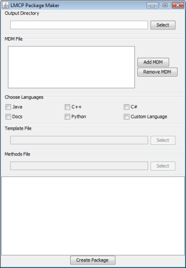

Using the LMCP LmcpGen
The Lightweight Message Communication Protocol (LMCP) LmcpGen enables users
to produce source code for any properly formatted MDM file. For more information
on LMCP and the MDM format, refer to the LMCP documentation.
Requirements
LmcpGen requires a Java JRE version 1.6 or higher. To create new Methods
files (more on this later) then the Java JDK 1.6 or higher is also required. LmcpGen
is compatible with any platform running the JRE/JDK 1.6.

The LMCP LmcpGen User interface
Using LmcpGen with Pre-defined Languages
To run LmcpGen, do the following:
- execute the command: java -jar LmcpGen.jar. If the command "java"
is not in your path, add the path to the java executable. (Double clicking the jar file will
also execute LmcpGen under windows.)
- When the dialog appears, enter the output directory
for generated source files (by typing or using the "select" button), and the MDM files to use as
the source for producing source packages. For each language, a set of LMCP-specific files are created
as well as directories for each namespace declared (from the MDMs). If any MDM requires content
from another MDM, it must be specified in the MDM window.
- Check one or more of the "pre-defined languages" check boxes. Click "Create Package". This will produce source files in the designated output directory. WARNING: Any existing files will be replaced. For each selected language, a sub-directory will be created in the output directory containing the generated source files.
Generating Files for a Custom Language
- To generate a custom language file, A user must create a template listing file, individual file templates,
and a single Java class file that specifies methods that replace string tokens in the template files.
(See Creating Custom Language Templates.)
- Click "Create Package". The status window will show the creation status. If there is an error, a dialog box
will appear noting the error. Most errors are due to MDM authoring errors, such as misspelled struct or enum
references, non-existent types, or not including a referenced MDM in the LMCP generation process.
Creating Custom Language Templates
LmcpGen is not limited to the existing language templates. Users may create language templates for other languages and
include those templates when producing code packages.
In order to produce a code package, users must create a template listing file, templates for each file type to be produced,
and a "Methods" file, that contains the Java methods that are called in order to produce the proper output code.
Creating a new language template set is not trivial work. Be prepared for many iterations of authoring and debugging.
Also, review the LMCP language specification thoroughly to ensure that the code will produce properly serialized objects.
Template Listing File
The Template listing file is a file that contains a listing of template files that will be used as a basis for producing code.
View the pre-defined template files that are contained in the templates directory of the source package for LmcpGen
for examples. Each line in the template listing must have the following format:
- If the line starts with "#", then the line is ignored (comment)
- the first entry on the line is multiplicity (ONCE, PER_MDM, PER_STRUCT, PER_ENUM).
- the second entry is the source file. This is relative to the location of the template listing file.
- the third entry is the destination file. Files are produced as follows for a given multiplicity:
- ONCE. One one instance of the template file is produced.
- PER_MDM One instance for each MDM is produced.
- PER_STRUCT One file is produced for every struct defined in each MDM.
- PER_ENUM One file is produced for every enum defined in each MDM.
The template listing file may contain replacement tokens (explained below) so that each produced file will be named according
to the class it is producing.
Template Files
Template files form the skeleton of each file produced according
to the template listing. To customize each file according to the struct, enum, or MDM it is representing, replacement tokens
are used to insert strings according to methods that are contained in the "methods" class. Replacement tokens are defined
by -<token_name>-. Every time a -<token_name>- token is found, a method in the "methods" class with the name of the
token is called by LmcpGen. The methods class contains all of the token replacement tags that will be encountered
in the template files.
Methods Class
The heart of the LMCP generation process is the "methods" class. Here, all of the logic takes place in order to produce meaningful
code. First, create a new class (it can have any name and reside in any package.) For every unique token in every template file
(as well as the template listing file), create a method that has the following signature:
public static String token_name(MDMInfo[] infos, MDMInfo info, File outfile, StructInfo st, EnumInfo en, String ws)
- infos is an array of all MDMInfo objects for this LmcpGen session. It is never null. The MDMInfo object is a
simplified view of the MDM file after being parsed by the MDMReader. The MDMInfo object contains all relevant
information that is contained in the MDM XML file.
- info is the MDMInfo for the current MDM being considered. This is null for any template that has a multiplicity of "ONCE".
- outfile specifies the name of the output file as specified by the template listing file.
- st is the StructInfo object that contains information regarding the current struct. This is null for multiplicity
of "ONCE", "PER_MDM", or "PER_ENUM".
- en is the EnumInfo object that contains information regarding the current enum. This is null for multiplicity of "ONCE",
"PER_MDM", or "PER_STRUCT".
- ws is the whitespace that precedes the token in the template file. Usually, methods return a string that includes the
whitespace leading each line, so that generated code is more easily viewed by programmers.
Be careful to observe multiplicity when writing the logic for each method. Do not attempt to access "null" objects. For insight
into the use of these methods, see other code packages in LmcpGen.
Review the methods available in the Java String, StringBuffer, and StringBuilder classes. There are many tools,
including regular expressions, and token splitting that will aid in the generation of code. Creating strings that
produce code (especially in another language) can be a confusing process. Remember to use end-of-line characters
when appropriate and to properly escape quotes.
Building the new Code Package.
When the methods file and template files are complete, compile the methods file using javac in order to create a .class file
for use in LmcpGen. Be sure to include the lmcp.jar file in the class path.
Running LmcpGen for a Custom Language
To run LmcpGen for a custom language, click on the "Custom Language" checkbox. Specify the name of the template
listing file and the compiled methods class in the appropriate fields. Click "Create Package" to generate the source files.
Running the LmcpGen on the Command Line
The LmcpGen can be run on the command line. The GUI-less version of the LmcpGen takes a few parameters
that can be entered manually or saved in a batch file. To run the LmcpGen, make sure you have java loaded on
your system so you can access the "java" command from the shell. Then change directories to where your LmcpGen
jar file is stored, and type the following command:
java -jar LmcpGen.jar
The above command is followed by parameters as described below. You can also use the -help parameter
at any time to list the options.
-mdm <filename> path to the MDM XML file. Multiple MDMs can be specified by repeating
the -mdm tag.
-dir <directory path> path to the directory were files are to be written.
The directory must exist.
-methods <method class name> Specifies the fully resolved class name.
The class must be on the classpath.
-template <template file> The .tl file used as an index for file.
-checkMDM <mdm file> Checks the MDM file for errors and exits creation.
in order to build LMCP code, at least one MDM, the template file and the "methods" class must be specified. To
run the LmcpGen for multiple languages, run the command line more than once, varying the methods and
template parameters.
Example
Compiling a Java package for the MDM named "test.mdm", and saving the output into a directory named "java"
java -jar LmcpGen.jar -mdm "test.mdm" -template "templates/java.tl",
-methods "avtas.lmcp.lmcpgen.JavaMethods" -dir "output/java"
The LmcpGen has pre-defined templates and methods for the following languages:
| Language |
Template |
Methods class |
| C++ |
templates/cpp.tl |
avtas.lmcp.lmcpgen.CppMethods |
| C# |
templates/cs.tl |
avtas.lmcp.lmcpgen.CsMethods |
| Java |
templates/java.tl |
avtas.lmcp.lmcpgen.JavaMethods |
| Python |
templates/python.tl |
avtas.lmcp.lmcpgen.PythonMethods |
| Docs (HTML) |
templates/doc.tl |
avtas.lmcp.lmcpgen.DocMethods |
| XSD |
templates/xsd.tl |
avtas.lmcp.lmcpgen.XsdMethods |